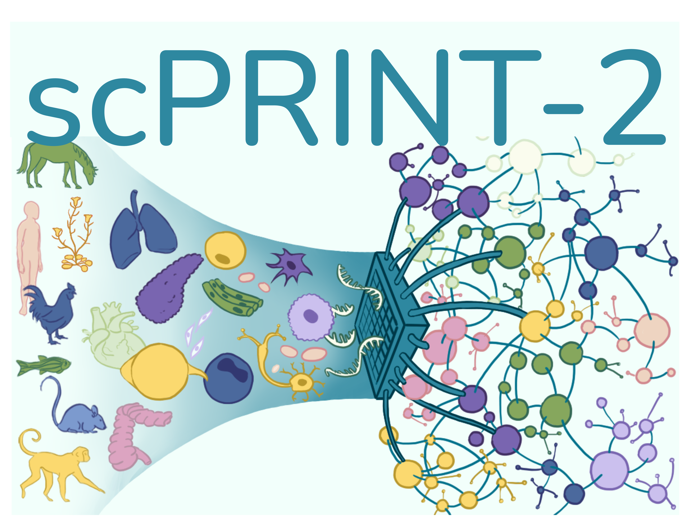

scPRINT-2: 🏃🏃Your next-gen single cell foundation model

scPRINT-2 is a single-cell RNA-seq foundation model built by Jérémie Kalfon in the Cantini Lab. It uses novel architecture, encoding, decoding, training paradigms and losses.
scPRINT-2 has been pretrained on more than 350 million cells from more than 22,000 datasets and 16 species.
scPRINT-2 can be used to perform the following analyses in a zero-shot mode:
- expression denoising & imputation: increase the resolution of your scRNAseq data and discover un-measured genes' expression
- cell embedding and batch correction: generate a low-dimensional representation of your dataset at syntax level (organism, disease, cell type, sequencer, ...)
- label prediction: predict the cell type, disease, sequencer, sex, age, tissue of origin and ethnicity of your cells.
- gene network inference: generate a gene network from any cell or cell cluster in your scRNAseq dataset
- cross species integration: scPRINT-2 has been trained on 16 species and can be used to integrate data from different species.
Example of scPRINT-2 finetuning exist for:
- new species: finetune scPRINT-2 on a new organism
- classification: finetune scPRINT-2 on your own cell type /disease / age labels / more...
- batch correction of your datasets / atlas: finetune scPRINT-2 to integrate data across species, technologies, and labs.
scPRINT-2 is a foundation model and can be fine-tuned to perform many other analysis
Read the manuscript! if you would like to know more about scPRINT-2. Or have a look at some of my X-plainers.
🎊 test scPRINT and scDataloader on this simple example google collab
Table of Contents
- scPRINT-2: 🏃🏃Your next-gen single cell foundation model
- Table of Contents
- Use
scPRINT-2 - Usage
- Documentation
- Docker
- FAQ
- I have a dataset and want a quick analysis:
- I have a dataset and want some more control over what is going on and which model to use:
- What does my anndata need to contain to be run with scPRINT-2
- I want to generate an atlas-level embedding
- I need to generate gene tokens using pLLMs
- I want to re-train scPRINT-2 from scratch on my own data
- I want to regenerate the scPRINT-2 training corpus
- I want to fine-tune scPRINT-2 on my own data
- how can I find if scPRINT-2 was trained on my data?
- can I use scPRINT-2 on other organisms rather than humans?
- How long does scPRINT-2 take? What kind of resources do I need? (or in alternative: can I run scPRINT-2 locally?)
- I have different scRNASeq batches. Should I integrate my data before running scPRINT-2?
- I have new labels for my data that scPRINT-2 doesn't predict, how can I fine-tune it to predict them?
- where to find the input gene embeddings?
- Development
Use scPRINT-2
For the moment scPRINT-2 has been tested on MacOS and Linux (Ubuntu 20.04)
with Python 3.10+. Its instalation takes on average 2 minutes in uv but much
longer on conda. We highly recommend using uv to manage your python virtual
environments!!
Here is a link to our --still maintained-- previous generation model which contains larger size models: scPRINT-1 (don't forget to star it as well!):
try scPRINT-1 in superbio.ai!
Try scPRINT-1 on a Google Colab notebook!

To know about: lamin.ai
To use scPRINT-2, you will need to use lamin.ai. This is required to load biological information like genes, cell types, organisms.. (but also to manage the pre-training datasets if this is something you want to set up)
install
uv venv <env-name> --python 3.11
source <env-name>/bin/activate
#one of
uv pip install scprint2
# OR uv pip install scprint2[dev] # for the dev dependencies (building etc..) OR
# OR uv pip install scprint2[flash] # to use flashattention2 with triton: only if you have a compatible gpu (e.g. not available for apple GPUs for now, see https://github.com/triton-lang/triton?tab=readme-ov-file#compatibility)
#OR pip install scprint2[dev,flash]
lamin init --storage ./testdb --name test --modules bionty
lamin connect anonymous/testdb
⚠️ ./testdb is set in this example, but be mindful about where you want to
store your data, this might get quite big as you use i,t and if you are on
specific partition you want to consider this.
If you start with lamin and have to do a lamin init, you will also need to
populate your ontologies. This is because scPRINT-2 is using ontologies to
define its cell types, diseases, sexes, ethnicities, etc.
(link to view ontologies)
You can do it via the command:
scdataloader populate all
⚠️ It is ok to get warnings with this function
or with this function:
from scdataloader.utils import populate_my_ontology
populate_my_ontology() #to populate everything (can take 2-10mns)
populate_my_ontology( #the minimum for scPRINT-1 to run some inferences (denoising, grn inference)
organisms: List[str] = ["NCBITaxon:10090", "NCBITaxon:9606"],
sex: List[str] = ["PATO:0000384", "PATO:0000383"],
celltypes = None,
ethnicities = None,
assays = None,
tissues = None,
diseases = None,
dev_stages = None,
)
_adding_scbasecamp_genes() #to add when using scPRINT-2
A notebook for setting-up scPRINT-2 and lamin is also available here
We make use of some additional packages we developed alongside scPRINT-2 (they are also shipped with scprint-2 already).
Please refer to their documentation for more information:
- scDataLoader: a dataloader for training large cell models.
- GRnnData: a package to work with gene networks from single cell data.
- benGRN: a package to benchmark gene network inference methods from single cell data.
- simpler-flash: a package to easily use different versions of flash attention in pytorch models.
- hierarchical-classifier: a package to do hierarchical classification with pytorch when your labels can be mapped to a graph.
pytorch and GPUs
scPRINT-2 can run on machines without GPUs, but it will be slow. It is highly recommended to use a GPU for inference.
Most of the time, everything works out of the box; otherwise, please send an issue
model = scPRINT2.load_from_checkpoint(
'../data/temp/last.ckpt', precpt_gene_emb=None, )
You will know more about scPRINT-1 and scPRINT-2 in general by following the get-started notebook.
Usage
To start you will also need to download a checkpoint of a pretrain model like 18hebyht-final-small or some others from hugging face
$ hf download jkobject/scPRINT 18hebyht-final-small.ckpt --local-dir .
scPRINT-2's basic commands
This is a template of how you would go and use scPRINT most of the time:
# import stuff
from lightning.pytorch import Trainer
from scprint2 import scPRINT2
from scdataloader import DataModule
# setup a datamodule to train scprint2 from scratch
datamodule = DataModule(...)
# setup a model parameter
model = scPRINT2(...)
# to train / fit / test the model setup a trainer
trainer = Trainer(...)
# call the fit function
trainer.fit(model, datamodule=datamodule)
# to do predictions Denoiser, Embedder, GNInfer
denoiser = Denoiser(...)
adata = sc.read_h5ad(...)
denoiser(model, adata=adata)
...
scPRINT-2's basic command line
Then fine-tune or analyse on your data
$ scprint2 fit/train/predict/test/denoise/embed/gninfer/impute/gene_emb/generate/finetune --config config/[medium|large|vlarge] ...
To denoise a dataset:
$ scprint2 denoise --adata my_human_anndata.h5ad --ckpt_path v2-medium.ckpt --species "NCBITaxon:9606" --output_filename denoised.h5ad
to do embedding and classification on a dataset: (the current version implies doing a PCA and Umap so it might need a lot of RAM if run as is)
$ scprint2 embed --adata my_human_anndata.h5ad --ckpt_path v2-medium.ckpt --species "NCBITaxon:9606" --output_filename embedded.h5ad
To do gene network inference on a dataset:
$ scprint2 gninfer --adata my_human_anndata.h5ad --ckpt_path v2-medium.ckpt --species "NCBITaxon:9606" --cell_type 'cell_type_name_from-cell_type-obs_col' --output_filename grn.h5ad
To re-train scPRINT-2 from scratch or from a checkpoint:
$ scprint2 fit --config config/base_v2.yml --config config/pretrain_large.yml --ckpt_path large.ckpt
find out more about the commands by running scprint2 --help or
scprint2 [command] --help.
more examples of using the command line are available in the docs.
Example notebooks
- get-started: how to set things up
- run scPRINT-2 on a new species: how to fine-tune scPRINT-2 on a new organism. you will also need to generate embeddings and gene locations for your organism, see the FAQ below.
- do gene-network inference with scPRINT-2: how to use scPRINT-2 to infer gene regulatory networks from your scRNAseq data (the first part is about getting ground truth data with benGRN)
- generate cell embeddings and cell label predictions from my data: how to use scPRINT-2 to generate cell embeddings and predict cell type
- generate gene output embeddings from my gene expressiond data: how to use scPRINT-2 to generate gene embeddings from your scRNAseq data
- do counterfactual gene expression prediction with scPRINT-2: how to use scPRINT-2 to impute gene expression under different conditions
- do denoising with scPRINT-2: how to use scPRINT-2 to denoise your scRNAseq data
- do imputation with scPRINT-2 (e.g. on Xenium Panel data): how to use scPRINT-2 to impute missing genes in your scRNAseq data
- run scPRINT-2 on some Xenium spatial transcriptomics data: how to use scPRINT-2 to analyse spatial transcriptomics data
- fine-tune scPRINT-2 for cell type classification and/or batch correction: how to fine-tune scPRINT-2 on your own cell type labels
Documentation
For more information on usage, please see the documentation in https://www.jkobject.com/scPRINT-2/
Docker
By using the scPRINT-2 Docker image, you can bypass the complexities of manual
package installation, ensuring a consistent deployment environment. Included in
this repository is a Dockerfile that lets you craft a container for the project;
you have the choice to either build this image on your own or conveniently pull
it from Docker Hub.
Make sure that you have the docker command line interface installed on your
system.
A recommended way to install Docker with the correct NVIDIA drivers on Linux is to use this script
/!\ A MORE UP TO DATE DOCKER IMAGE is made as part of the open-problems benchmark and available on their GitHub for all tasks where scPRINT-2 is benchmarked
Simple tests:
An installation of scPRINT-2 and a simple test of the denoiser is performed during each commit to the main branch with a Github action and pytest workflow. It also provides an expected runtime for the installation and run of scPRINT-2. We now explore the different usages of scPRINT-2:
FAQ
I have a dataset and want a quick analysis:
-> use superbio
I have a dataset and want some more control over what is going on and which model to use:
You will need to understand a few things, like lamindb, scdataloader, and scprint-2's inference tool.
-> start with a quick intro using the google collab notebook
-> look at the other FAQ element based on your desired use-case
What does my anndata need to contain to be run with scPRINT-2
-> your anndata only needs to contain the species ontology id in its obs['organism_ontology_term_id'] (e.g. "NCBITaxon:9606"). It also needs to contain .var_names or .var.index with gene ids defined as ENSEMBL_IDs or HUGO_SYMBOL.
-> That's it. You can then follow the preprocessing steps from various example notebooks to align your anndata to our gene set, make sure that it fits our requirements and then send it to the model!
I want to generate an atlas-level embedding
-> Refer to the notebook nice_umap_explain.ipynb.
I need to generate gene tokens using pLLMs
To run scPRINT-2, you can use the option to define the gene tokens using protein language model embeddings of genes. This is done by providing the path to a parquet file of the precomputed set of embeddings for each gene name to scPRINT-2 via "precpt_gene_emb"
-> To generate this file please refer to the notebook generate_gene_embeddings.
I want to re-train scPRINT-2 from scratch on my own data
-> Refer to the documentation page pretrain scprint-2
I want to regenerate the scPRINT-2 training corpus
-> Have a look at the scDataLoader's README to understand how to do this.
I want to fine-tune scPRINT-2 on my own data
-> make sure that you a run of scPRINT-2's inference e.g. this one
-> then please refine your question: do you want finetuning to predict labels? do batch correction? or make scprint work on your species? Have a look at the usage section and the rest of the FAQ to find the relevant information.
how can I find if scPRINT-2 was trained on my data?
If your data is available in cellxgene, or is listed in Arc's scBaseCount, scPRINT-2 was likely trained on it. However, some cells, and datasets were dropped due to low-quality data, and some were randomly removed to be part of the validation/test sets.
can I use scPRINT-2 on other organisms rather than humans?
scPRINT-2 has been pretrained on 16 organisms, check in the model.organisms or in our manuscript that yours isn't one of them, or highly related first. If so uses these and make sure that the gene names can be easily mapped by scdataloader's preprocess function.
If not, scPRINT-2 can be used on other organisms that are not part of its training set, for this have a look at this notebook. You will also need to compute gene embeddings and gene locations for your organism's genetic data. Have a look at both notebooks.
If you want to use scPRINT-2 on very different organisms than what it was trained on, you might need to then apply some finetuning, have a look at the finetuning notebook too.
How long does scPRINT-2 take? What kind of resources do I need? (or in alternative: can I run scPRINT-2 locally?)
Please look at our manuscript table 1 and supplementary Table 1 - 2 to know more about computational ressources. But know that you will likely need at least one high performance GPU.
I have different scRNASeq batches. Should I integrate my data before running scPRINT-2?
scPRINT-2 takes raw count as inputs, so please don't use integrated data. Just give the raw counts to scPRINT-2 and it will take care of the rest. For better results you can apply some finetuning of scPRINT-2 on your batches to better integrate them. See the finetuning notebook. You can replace the cross-species MMD loss with a cross-batch MMD loss.
I have new labels for my data that scPRINT-2 doesn't predict, how can I fine-tune it to predict them?
First have a look at scPRINT-2's inference capabilities and checkout the finetuning notebooks.
In your case, what you will need to do is to reuse the finetuning notebook but
also update the output layers of the classifier to predict your new labels. You
can do this by changing the number of output classes in the classifier head to
match the number of new labels you have. You will also need to update the
scPRINT-2's mat_labels_hierarchy attribute to include your new labels and
their relationships if they are hierarchical and you want this to happen,
otherwise update it with an empty vector.
Make sure also to update the label_decoders attribute in the model to include
at the right index your new label decoder / classifier, the name of your new
labels.
Then you can proceed with the finetuning as usual, using your dataset with the
new labels in the obs of your anndata. (I am sure chatgpt can help you with it
too)
where to find the input gene embeddings?
If you think you need the gene embeddings file for loading the model from a checkpoint, you don't need to recompute them, as the embeddings are also stored in the model weights. You just need to load the weights like this:
model = scPRINT2.load_from_checkpoint(
'../../data/temp/last.ckpt',
precpt_gene_emb=None,
)
But if you want to, you can also recreate the gene embedding file through this notebook. Just call the functions, and it should recreate the file itself.
The file itself is also available on hugging face
/!\ Please understand that what I mean by gene embedding is the immutable input gene embeddings encoding the gene name. scPRINT-2 directly takes raw counts as input and takes care of doing the embedding on the fly. (it does similarly for a gene's location in the genome).
Development
dev install
If you want to use the latest version of scPRINT-2 and work on the code yourself
use git clone and pip -e instead of pip install.
git clone https://github.com/cantinilab/scPRINT-2
git clone https://github.com/jkobject/scDataLoader
git clone https://github.com/cantinilab/GRnnData
git clone https://github.com/jkobject/benGRN
pip install -e scprint2[dev]
pip install -e scDataLoader[dev]
pip install -e GRnnData[dev]
pip install -e benGRN[dev]
Reproducibility
To reproduce the paper please use the version / tag 1.6.4 and you will have
to git clone the repo to have access to all the pre-training functionalities!
⚠️ When re-training scPRINT-2 from scratch, by default, every N epoch, the
test() function will be called `. It is using a predownloadedtest datasets
paths (see https://github.com/cantinilab/scPRINT-2/issues/12). Replace them with
your own paths you want to use these test functions. They are also made
available on hf.co: https://huggingface.co/jkobject/scPRINT-2/tree/main
Building the Docker Image
To build the Docker image from the provided Dockerfile, run the following
command from the root directory of this repository:
docker build -t scprint2:latest -f Dockerfile .
Pulling the Docker Image from Docker Hub
If you don't want to build the image yourself, you can pull it directly from Docker Hub:
docker pull jkobject/scprint2:1.0.0
docker tag jkobject/scprint2:1.0.0 scprint2:latest
Running the Docker Container
Once you have the image (either by building it or pulling it), you can start a container with:
docker run --gpus all --rm -it scprint2:latest bash
Please note: When running the Docker container, ensure you mount any necessary folders using the -v option to access them inside the container.
Participate
Read the CONTRIBUTING.md file.
Read the training runs document to know more about how pre-training was performed and the its behavior.
code coverage is not right as I am using the command line interface for now. >50% of the code is covered by my current unit test.
Acknowledgement: python template laminDB lightning
Created by Jérémie Kalfon